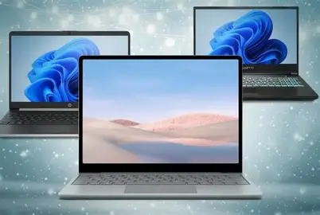
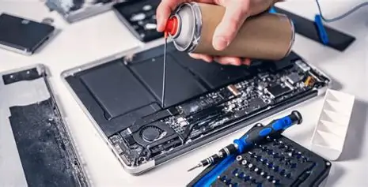
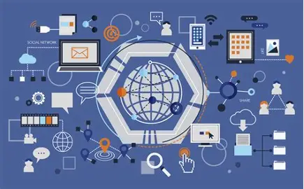

Equipos informáticos
Conoce los equipos utilizados para desarrollar actividades tecnológicas y realizar diferentes tareas informáticas.
Conoce algunas actividades relacionadas con la instalación, el mantenimiento y las redes informáticas de la especialidad de Plataformas y Servicios TI del CETPRO Público Huaral.

Conoce los equipos utilizados para desarrollar actividades tecnológicas y realizar diferentes tareas informáticas.

Aprende sobre la revisión, limpieza y conservación de los equipos para mejorar su funcionamiento.

Descubre cómo se conectan las computadoras y otros dispositivos para compartir información y recursos.
Observa una demostración audiovisual sobre los equipos, las herramientas y las actividades relacionadas con la especialidad de Plataformas y Servicios TI.
Escucha una breve presentación sobre Plataformas y Servicios TI y la importancia de la tecnología en el mundo actual.